OLD visual assets are absent from active runtime. Fresh source is authored only from the completely clean plot and Muneum Gate1 reference. No old station donor or previous candidate. Human artistic acceptance pending.
Handoff · QA / remaining limits · Playable ZIP
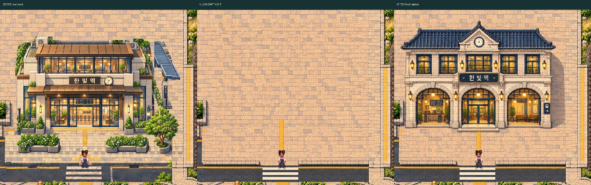
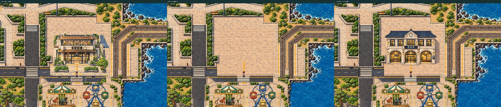
station-all-before-native.png · station-all-clean-native.png · station-all-after-native.png
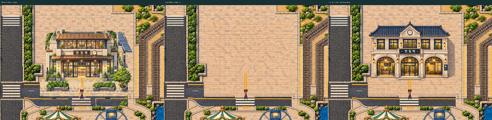
station-facade-before-native.png · station-facade-clean-native.png · station-facade-after-native.png
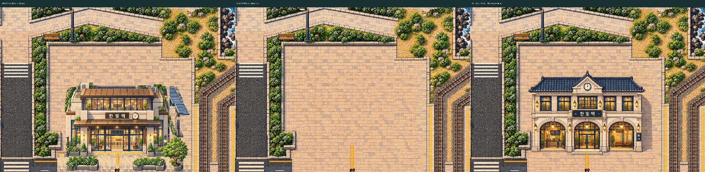
station-top-before-native.png · station-top-clean-native.png · station-top-after-native.png
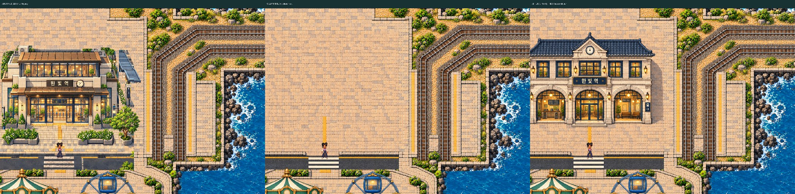
station-east-before-native.png · station-east-clean-native.png · station-east-after-native.png
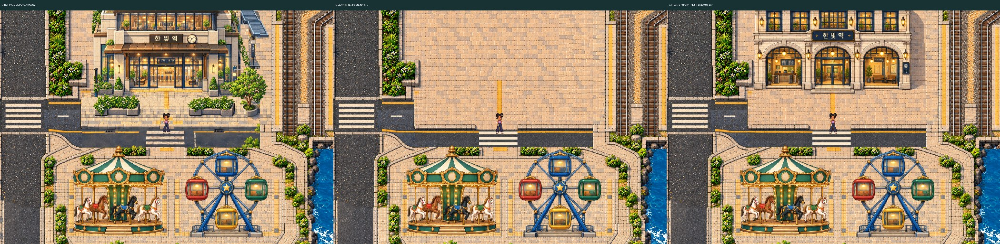
station-base-before-native.png · station-base-clean-native.png · station-base-after-native.png
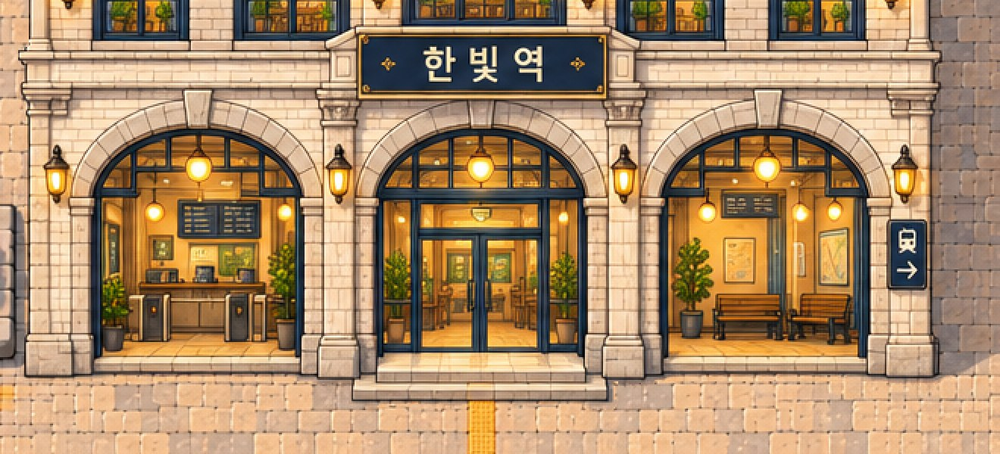
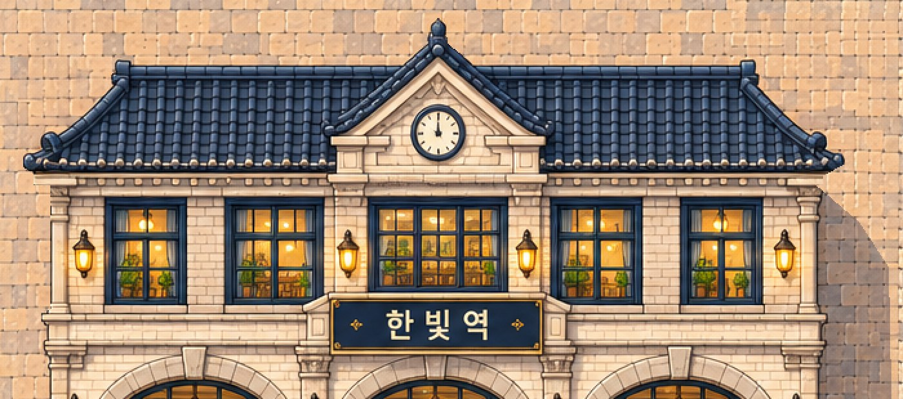
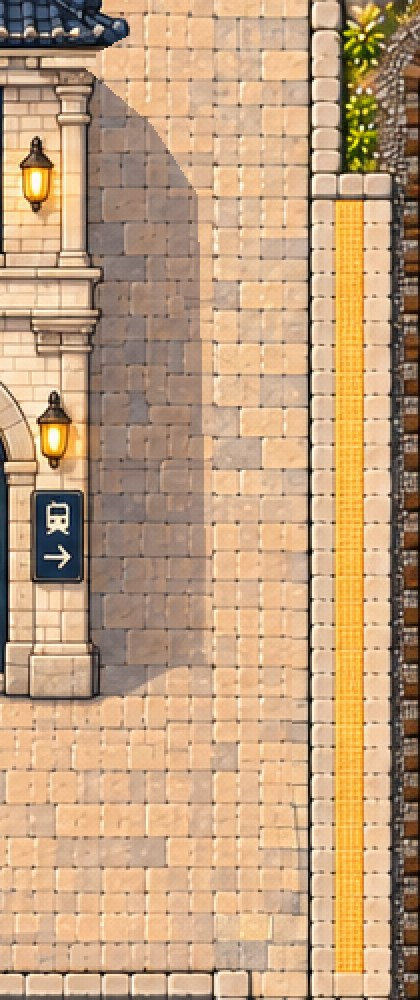
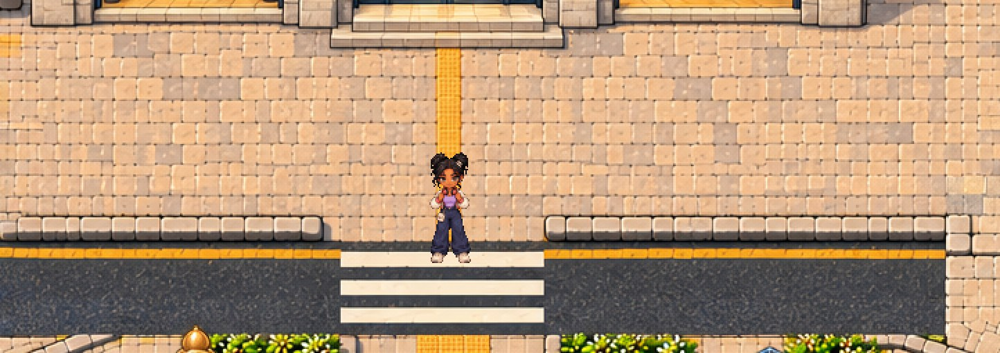
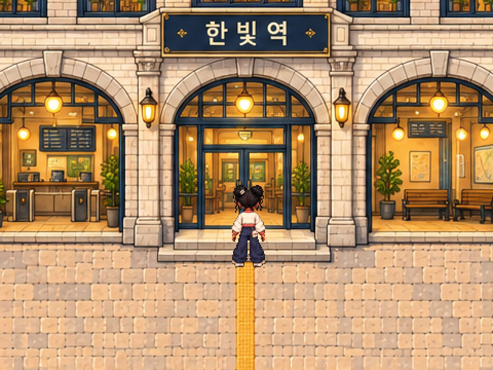
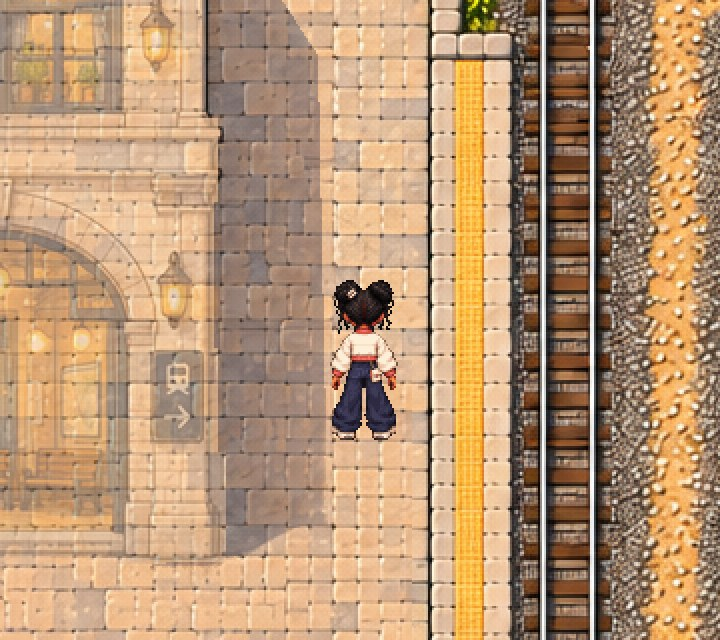
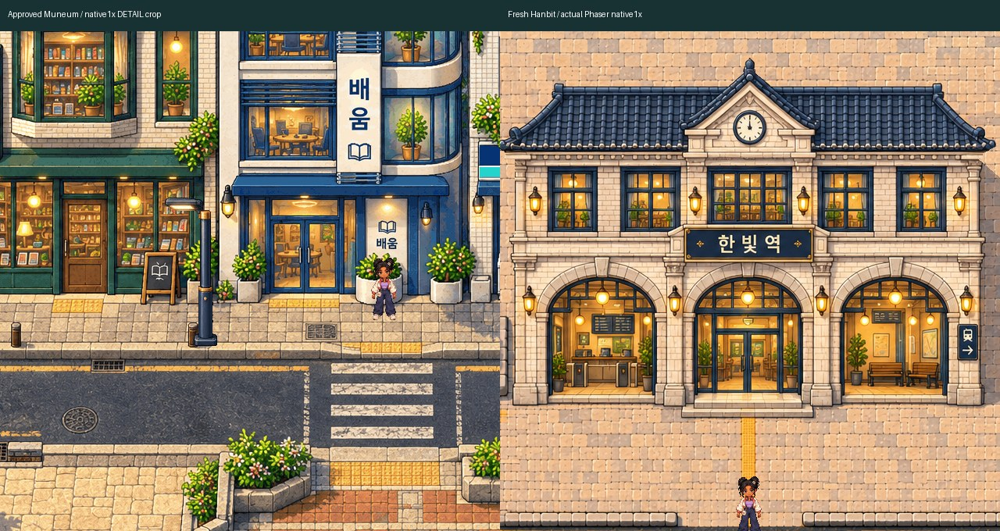
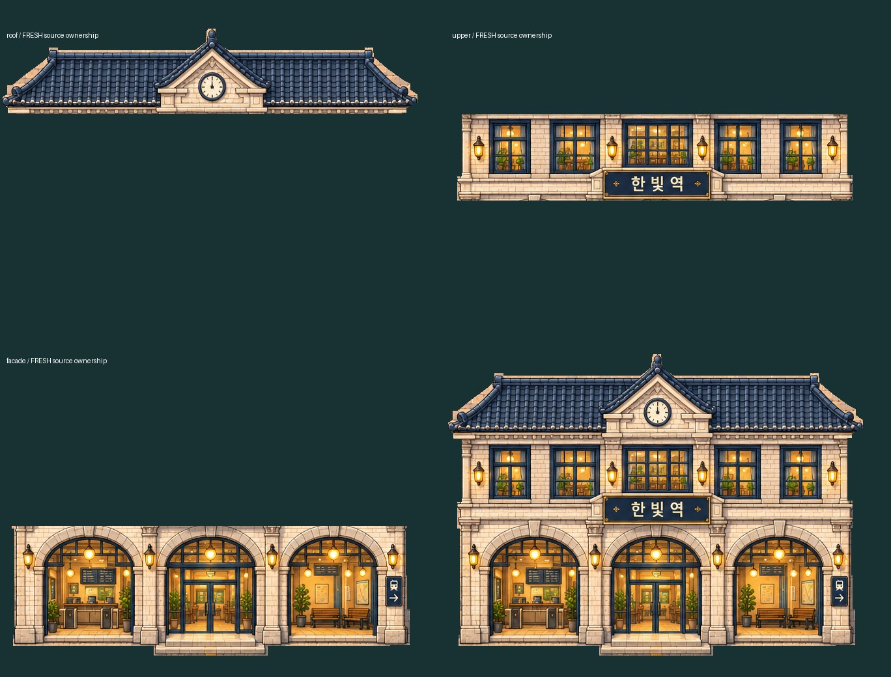
Original WASD/native joystick; four consecutive legs after initial review spawn. Entrance, genuine formerly-blocked platform transfer, side passage/return and crosswalk. No teleport, forced sprite frame, speed/collision/clock override. Physical phones NOT TESTED.
1280x1000 recording · Actual controls · Native foot/body readback